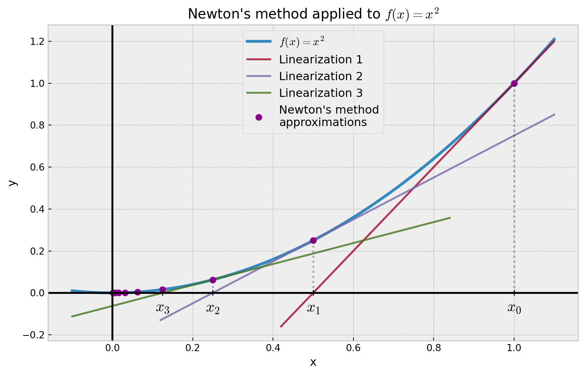

def iterative_newton(f, df, x0, n):
"""Solves f(x) = 0 using the Newton's method.
Args:
f: A callable, the function f(x) of interest.
df: A callable, the derivative of f(x).
x0: Initial good point to start linearizing.
n (Optional): Number of recursion steps to make.
"""
xs = [x0] # Sequence of xn.
# Get latest x value in sequence and
# apply the Newton recurrence formula.
for _ in range(n):
last = xs[-1]
res = last - f(last)/df(last)
xs.append(res)
return xsProblem: Given a real-valued function f(x) in one real variable, what are the values x_0 \in \mathbb{R} such that f(x_0) = 0?
If the function f(x) is linear, then the problem is trivial. Explicitly, if f(x) = ax + b for some a, b \in \mathbb{R}, then x_0 = -b/a gives a solution as long as a \neq 0. However, when the function is nonlinear, the problem can get complicated very fast. For example, try solving when the function is f(x) = \sin(e^{x}) + \cos(\log x).
Newton’s idea (an overview)
One way of solving this problem is to linearize the function f(x) around a certain point x_0 of our choice so that we can easily solve the resulting linear equation. Say we get x_1 as a solution, then we repeat linearizing f(x) around x_1; so on and so forth. The initial point x_0 is chosen such that it is close to our hoped solution, say, x^*. The idea is that if x_0 is suitably chosen, then the solutions x_1, x_2, x_3, \ldots to each linear approximation of f(x) approximates x^* better and better, and in the limit converges to x^*. This whole process is known as the Newton’s method. A nice picture of the method can be seen in Figure 1. Here, Newton’s method is applied to f(x) = x^2 over n = 10 iterations, starting at x_0 = 1.
We see from Figure 1 that the Newton’s method converges towards x^* = 0, as expected: f(x) = 0 if and only if x = 0.
Newton’s idea (the algebra)
Let us make our discussion above more precise. Linearizing f(x) around x_0 simply means Taylor expanding f around x_0 and neglecting \mathcal{O}(h^2) terms. Of course, this is assuming that we can actually perform Taylor expansion in the first place! Explicitly, the Taylor expansion of f around x_0 yields
f(x) = f(x_0) + f'(x_0) (x - x_0) + \mathcal{O}(h^2).
So if we neglect \mathcal{O}(h^2) terms, we get (in approximation) the linear equation
f(x) = f(x_0) + f'(x_0) (x - x_0).
The solution to this linear equation is thus simply
x_1 = x_0 - \frac{f(x_0)}{f'(x_0)}.
We then repeat the process by linearizing f around x_1. In this case we have
f(x) = f(x_1) + f'(x_1) (x - x_1) \implies x_2 = x_1 - \frac{f(x_1)}{f'(x_1)},
with x_2 being a solution. Doing this iteratively yields a general formula
x_{n+1} = x_n - \frac{f(x_n)}{f'(x_n)},
known as Newton’s formula. Here is the Newton’s method in one statement.
Theorem 1 (Newton’s method) Let x^* \in \mathbb{R} be a solution to f(x) = 0. If x_n is an approximation of x^* and f'(x_n) \neq 0, then the next approximation to x^* is given by x_{n+1} = x_n - \frac{f(x_n)}{f'(x_n)}, with initial condition, a suitably chosen x_0 \in \mathbb{R}.
Code implementation
An iterative implementation of the Newton’s method in Python is given below:
Using the same parameters as above, we can also implement a one-liner recursive implementation:
def recursive_newton(f, df, x0, n):
return x0 if n <= 0 else recursive_newton(f, df, x0 - f(x0)/df(x0), n-1)Observe that both algorithms have \mathcal{O}(n) space complexity where n is the number of iterations or depth of the recursion. The time complexity for the iterative implementation is also \mathcal{O}(n), but for the recursive implementation, it is a bit tricky to compute (so we leave it as an exercise!).
Note that there is a small caveat to the Newton’s method which we have implicitly highlight in this post, can you spot it?
Example usage: finding root of f(x) = x^2
Library imports
import numpy as np
import matplotlib.pyplot as pltWe first need a helper function to differentiate a function using finite difference approximation.
def finite_diff(f):
""" Returns the derivative of f(x) based on the
finite difference approximation.
"""
h = 10**(-8)
def df(x):
return (f(x+h)-f(x-h)) / (2*h)
return dfWe then define the function f(x) = x^2, compute its derivative and apply Newton’s method over n = 10 iterations, starting at x_0 = 1.
f = lambda x: x**2
df = finite_diff(f) # Differentiate f(x).
res = iterative_newton(f, df, 1, 10)
res = np.array(res) # To utilize numpy broadcasting later.Finally, we plot the function.
Plotting code
plt.style.use('bmh')
# Bounds on the x-axis.
lo = -0.1
hi = 1.1
mesh = abs(hi) + abs(lo)
fig, ax = plt.subplots(figsize=(10, 6))
# Points of the function f(x).
xs = np.arange(start=lo, stop=hi, step=0.01)
ys = f(xs)
def tangent_line(f, x0, a, b):
""" Generates the tangent line to f(x) at x0 over
the interval [a, b]. Helps visualize the Newton's method.
"""
df = finite_diff(f)
x = np.linspace(a, b, 300)
ytan = (x - x0)*df(x0) + f(x0)
return x, ytan
# Tangent lines to f(x) at the approximations.
xtan0, ytan0 = tangent_line(f, res[0], 0.35*mesh, hi)
xtan1, ytan1 = tangent_line(f, res[1], 0.1*mesh, hi)
xtan2, ytan2 = tangent_line(f, res[2], lo, 0.7*mesh)
ax.plot(xs, ys, label="$f(x) = x^2$", linewidth=3)
ax.plot(xtan0, ytan0, label="Linearization 1", alpha=0.8)
ax.plot(xtan1, ytan1, label="Linearization 2", alpha=0.8)
ax.plot(xtan2, ytan2, label="Linearization 3", alpha=0.8)
ax.plot(res, f(res), color='darkmagenta',
label="Newton's method\napproximations",
marker='o', linestyle='None', markersize=6)
# Labels for occurring approximations.
for i in range(0, 4):
ax.plot(res[i], 0, marker='+', color='k')
ax.vlines(res[i], ymin=0, ymax=f(res[i]),
linestyles='dotted', color='k', alpha=0.3)
plt.annotate(f"$x_{i}$",
(res[i], 0),
textcoords="offset points",
xytext=(0, -20),
ha='center',
fontsize=16)
# Grid and xy-axis.
ax.grid(True, which='both')
ax.axvline(x = 0, color='k')
ax.axhline(y = 0, color='k')
# Labels and legend.
ax.set_xlabel("x")
ax.set_ylabel("y")
ax.set_title("Newton's method applied to $f(x) = x^2$")
plt.legend(fontsize=12, loc=9)
plt.show()